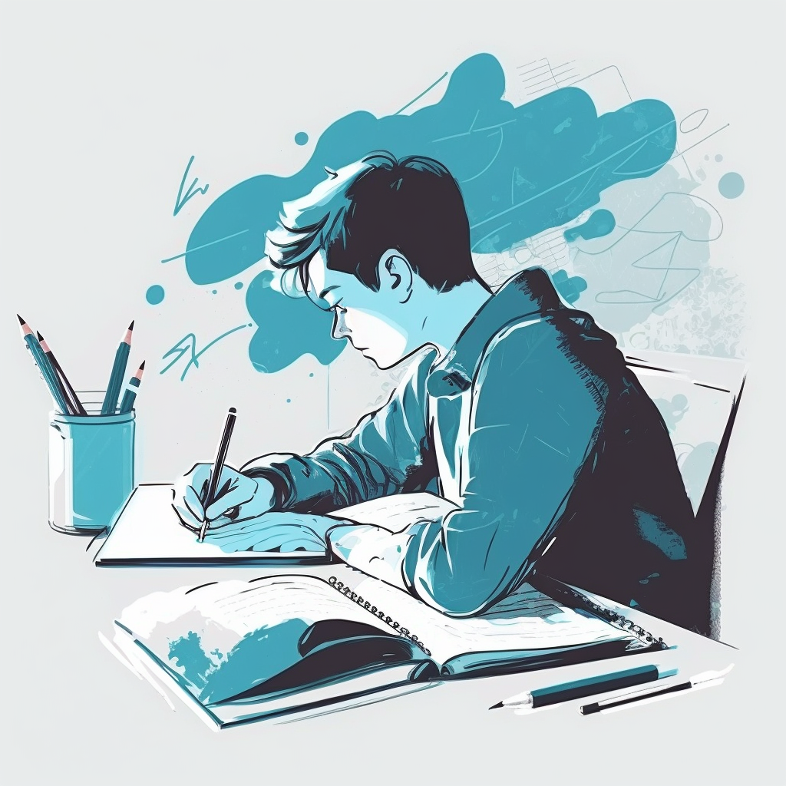
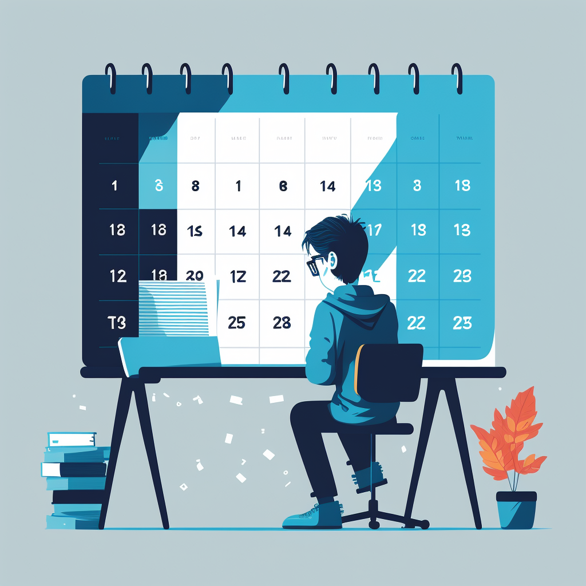
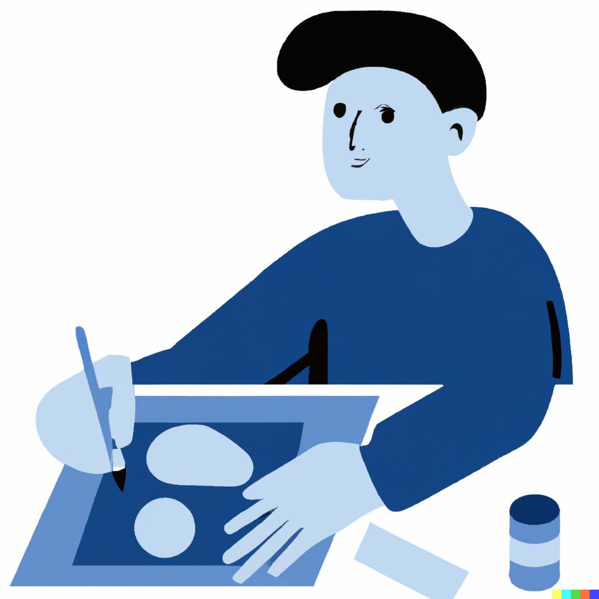
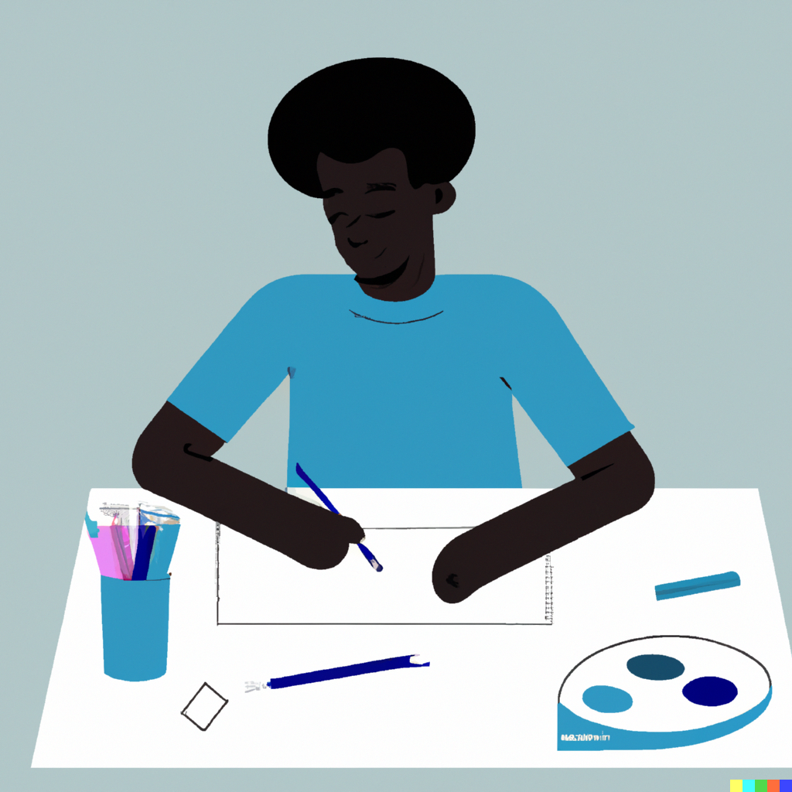
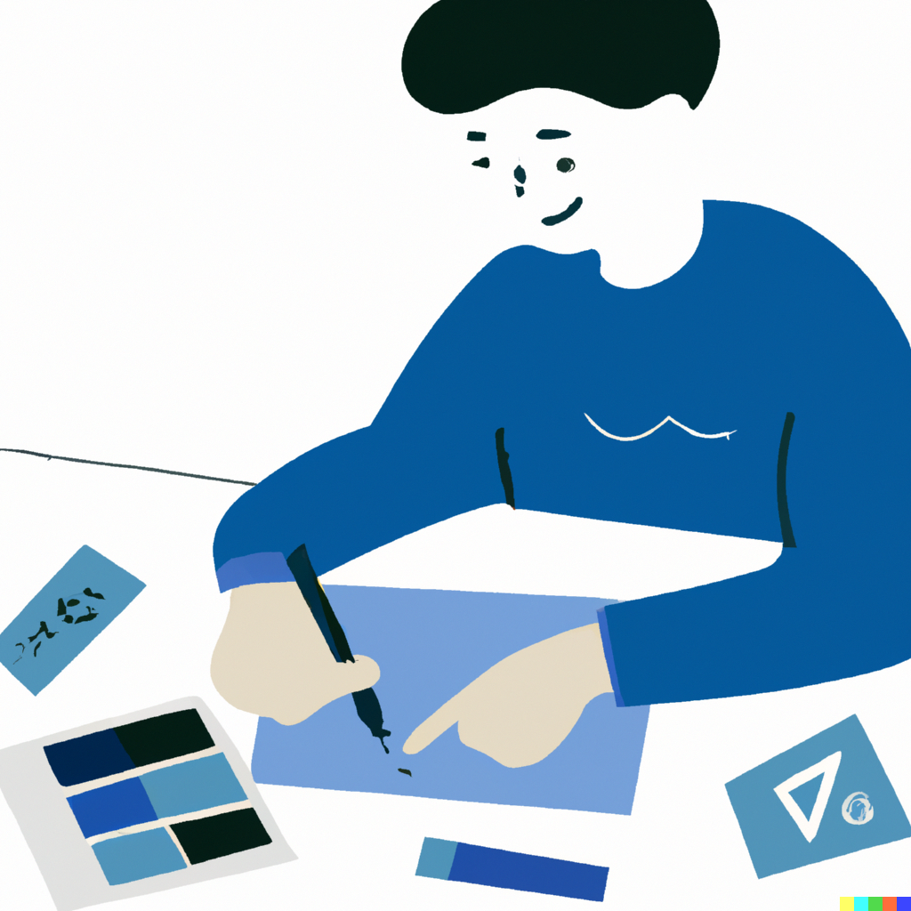

Tomar apuntes
Tomar apuntes es una técnica fundamental para muchos estudiantes. Durante las clases, se recomienda tomar notas de las ideas clave, los conceptos importantes, las fechas y los detalles relevantes. Tomar notas también es útil al leer un libro o artículo. Esto puede ayudar a recordar la información y a comprender mejor el material. Al tomar apuntes, se debe ser conciso y organizado. Es importante no escribir todo lo que se dice, sino sólo lo más importante. También se deben utilizar abreviaturas y símbolos para ahorrar tiempo y espacio.

Establecer un horario
Establecer un horario de estudio es importante para organizar el tiempo y asegurarse de que se dedique suficiente tiempo a cada asignatura. Es importante crear un horario realista y que se pueda mantener. Debe incluir tiempo para estudiar, hacer tareas, asistir a clases, dormir y realizar actividades recreativas. Un horario también puede ayudar a reducir el estrés y la ansiedad, ya que se sabe exactamente lo que se debe hacer cada día.

Hacer resúmenes
Crear resúmenes es una técnica útil para comprender mejor la información. Al hacer un resumen, se deben identificar las ideas clave y las frases más importantes. También se deben resumir los conceptos y la información. Esta técnica puede ayudar a recordar la información con mayor facilidad y a entender mejor los temas complejos.

Realizar preguntas
Hacer preguntas es otra técnica importante para comprender la información. Al hacer preguntas, se puede identificar lo que se sabe y lo que se desconoce. También se pueden identificar las áreas que necesitan más estudio. Es importante hacer preguntas para entender los conceptos y la información y para relacionarlos con la vida diaria.

Usar diagramas y gráficos
Los diagramas y gráficos pueden ser útiles para visualizar la información. Se pueden utilizar para representar conceptos y relaciones entre ellos. Estas imágenes pueden ayudar a entender mejor los temas complejos y a retener la información con mayor facilidad.

Practicar
La práctica regular es importante para mejorar las habilidades y la comprensión. Al hacer ejercicios y problemas de práctica, se pueden aplicar los conceptos y la información. Esto puede ayudar a recordar la información con mayor facilidad y a comprenderla mejor. También se pueden hacer simulaciones y juegos para practicar.